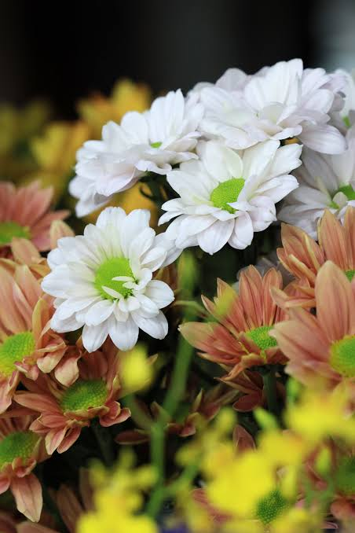

Flowers are beautiful and colorful parts of many plants. They make gardens, parks, and surroundings look attractive and pleasant. Flowers come in different shapes, sizes, colors, and fragrances. Some common flowers are roses, lilies, jasmine, sunflowers, lotuses, and marigolds. Flowers are important because they help plants reproduce by producing seeds. They also provide nectar and pollen for bees, butterflies, and other insects. People use flowers for decoration, festivals, celebrations, and making perfumes. Flowers bring beauty and happiness to our lives and are an important part of nature.